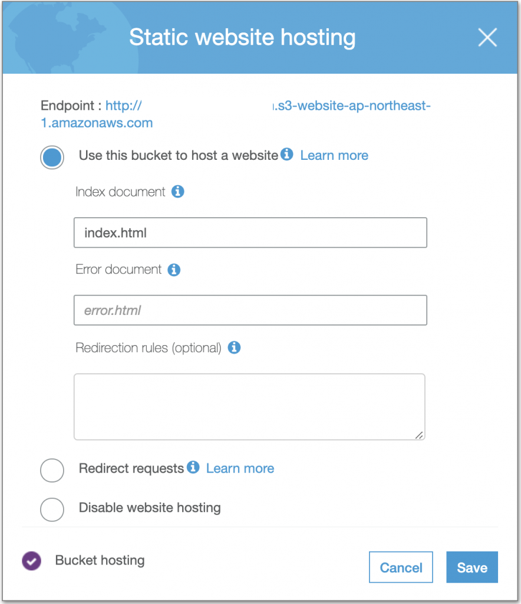
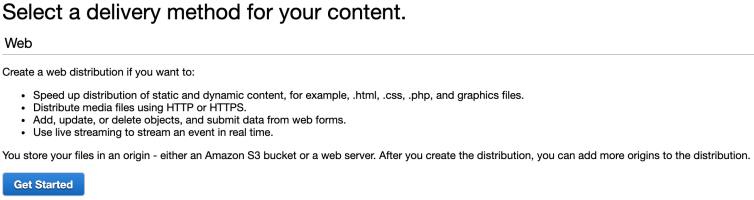
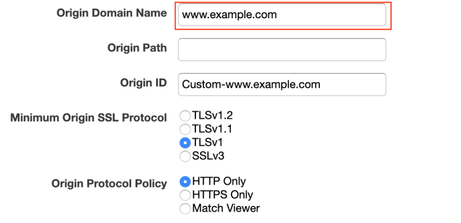
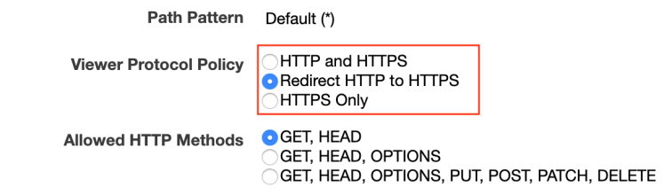
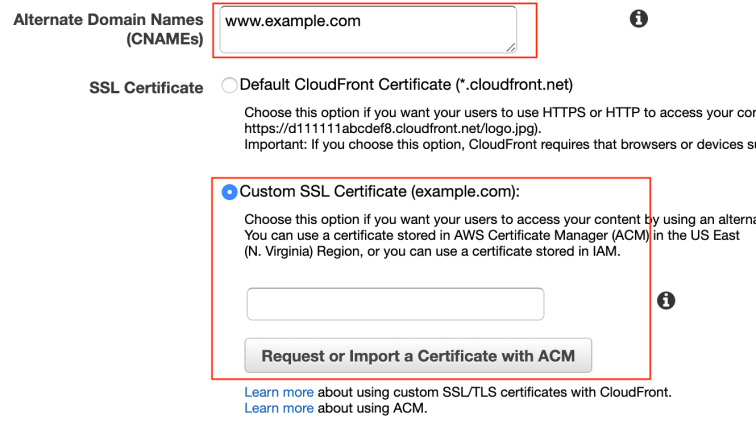
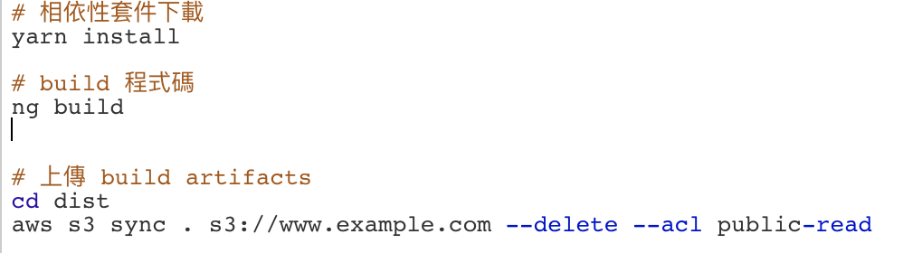
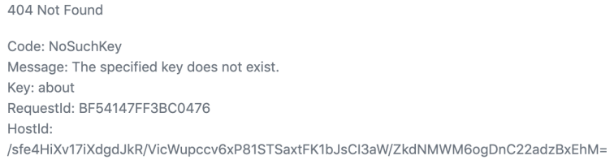

讓你的 AWS S3 擁有自己的網域名稱還具有免費網路憑證
前言
大部份 AWS 的使用者都如道 S3 提供一個僅需在管理頁面點擊設定便可以讓 Bucket 變成靜態網頁的方法。
但也僅提供 HTTP 連線方式，如果我要的是個客制化的 Domain + HTTPS 協定呢?
這時候我們所只需要 Cloudfront 及 Certificate Manager 這兩個服務來達成我們目的。如果有網域名稱的需求也可以利用 Route53 來做購買的動作。
建立 AWS S3 Bucket
假設我已經擁有一個叫www.example.com的網域名稱，接下來的步驟:
- 建立一個與域名相同的 Bucket Name，這裡的範例就會是
www.example.com。 - 開啟 Bucket 中
Static website hosting的功能並且複制 Endpoint 裡的網址。
設定 AWS Cloudfront
-
選擇
Webdelivery method。
-
將 Bucket 的 Endpoint 填入
Origin Domain Name。
-
設定協定方式
我希望只提供 HTTPS 的連線方式，所以我會選擇自動導向的方式，避免使用者輸入 http 開頭的網址後出現錯誤

-
設定域名及憑證
此範例的域名就是
www.example.com，而憑證的申請並不會太困難，可參考官方文件或是 google 申請的教學。最後只要點擊建立並且等待至少 15 分鐘的時間生效。

Jenkins 自動 Deploy(optional)
為了可以減少開發中多餘的動作，自動部署的功能就重要多了，這也是 CI/CD 現在被重視的原因了。
而這裡我使用的是 Jenkins，動作主要有兩步驟，也就是編譯與部署

實作中遇到的問題
在實作完成後，我也很幸運的遇到問題了，在存取的時候出現下圖的錯誤

在請教 Google 大神後也找到了 解法， 這裡面提供了兩種解法
我選擇的是直接做導向這個解決方式並且很順利的解決了這個問題，現在也可以正常存取了。
總結
AWS 的多元化的服務讓使用者僅需利用介面的操作便能達目的，個人認為是很直覺又方便的一件事， 這種一條龍的方式也減少了使用者切換平台而造成多餘的時間成本，很值得學習。